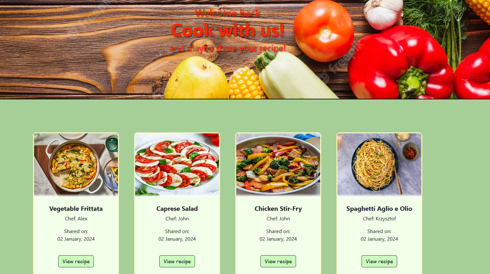
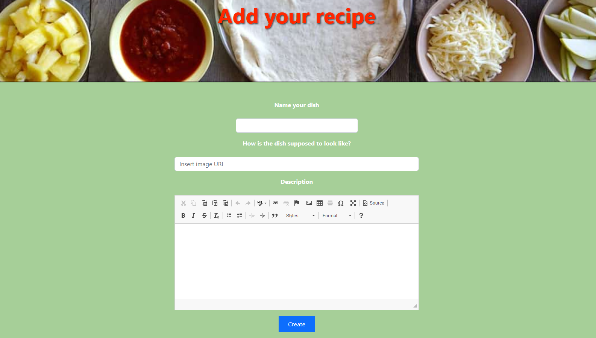
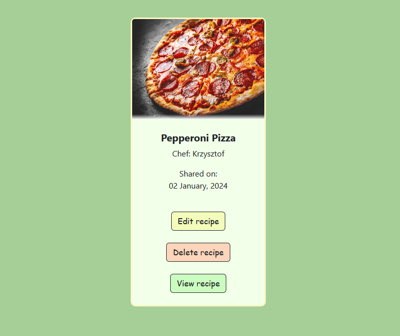

Introduction
I created this webapp in Python using modules such as Flask, SQLalchemy, WTForms. Additionaly all the user, recipe and ratings data is stored in PostgreSQL format.
The frontend side of this webapp was partly constructed with templates provided by Bootstrap
User authentication
Upon registration, your password becomes encrypted with the help of the Werkzeug module, which hashes the password before storing it in the database, making it secure during a data breach
Functions for authenticated users
Logged in users gain the ability to share their recipes. There is also a comment section under each recipe for users to exchange their opinions or just give feedback.
Comments on the recipe are stored as a relationship to the corresponding recipe, linked with the commenter's ID.
Users are free to include images when commenting or to format their text.
Lastly, users have the ability to edit or delete their recipe if they feel like it.
